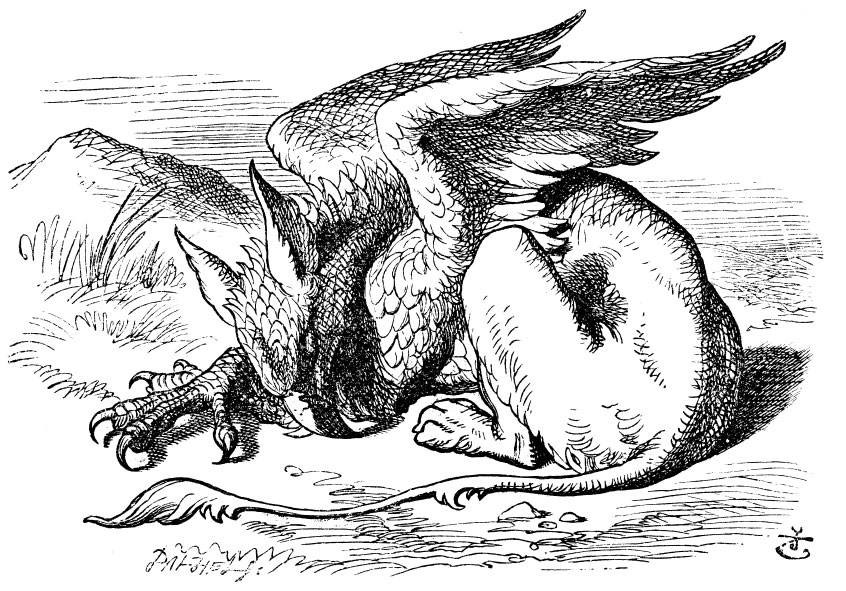
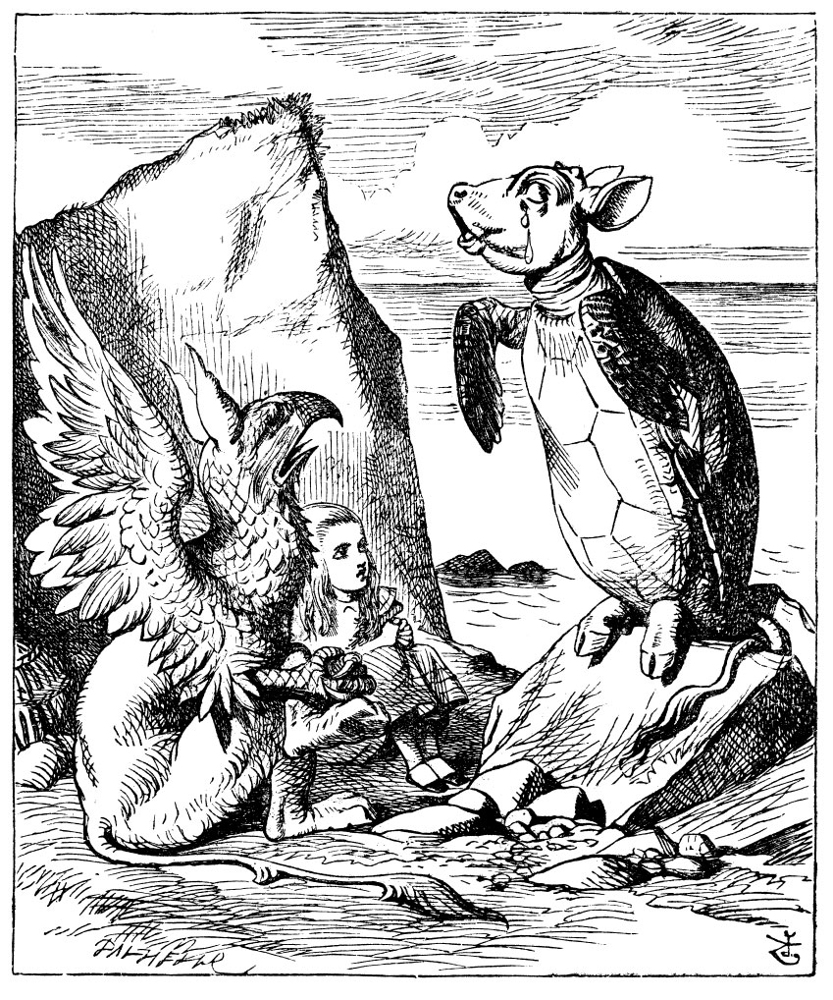

Yalana Su Kaplumbağasının Hayat Öyküsü
“Seni yeniden gördüğüme ne kadar sevindim, bilemezsin eski dostum,” dedi Düşes, sonra da sevgiyle Alice'in koluna girdi ve birlikte yürümeye koyuldular.
Alice, Düşes’i böyle keyifli görmekten son derece mutluydu; mutfakta karşılaştıkları sırada onu öyle zalim kılan şey biber olsa gerek diye düşündü.
“Ben Düşes olursam,” dedi Alice kendi kendine (bunu çok fazla umutlu bir havayla söylemese de) “mutfağıma asla biber sokmam. Onsuz da çorba gayet güzel olur... İnsanları sinirli yapan şey belki hep biberdir,” diye sözlerine devam etti, yeni bir kural keşfetmenin verdiği sevinçle, “insanları asık suratlı eden şey sirke... huysuzlaştıran papatya... ve... çocukları tatlı huylu yapan şey de arpa şekeri ve bunun gibi şeyler. Keşke insanlar bunu bilebil-seydi: O zaman şeker konusunda bu kadar cimri olmazlardı...”
Bunları düşünürken Düşes'i büsbütün unutmuştu; tam kulağının dibinde sesini duyunca biraz ürperdi, “Tatlım daldın, bir şeyler düşünüyorsun, bak bu yüzden konuşmayı unuttun. Tam şu an buradan çıkarılacak kıssadan hisseyi sana söyleyecektim, ama unuttum, birazdan aklıma gelir.”
“Belki de buradan çıkarılacak bir ders yoktur,” demeye kalkıştı Alice.
“Yok, yok, çocuk!” dedi Düşes, “Her şeyden çıkarılacak bir ders vardır. Yeter ki insan onu bulabilsin.” Konuştuğu sırada Ali-ce’e daha bir sokuluyordu.
Alice, Düşes’in kendisine bu denli yaklaşmasından hiç de hoşnut değildi: Bir kere fazlasıyla çirkindi; sonra Düşes’in boyu, çenesini Alice’in omzuna dayayacak kadardı, çenesi de öyle sivriydi ki, omzuna batıyordu. Ne var ki, kabalık etmek de istemiyordu, o yüzden elinden geldiğince sesini çıkarmadı. “Oyun, sanki şimdi daha iyi gidiyor gibi,” dedi.
“Öyle,” dedi Düşes, “buradan çıkarılacak kıssadan hisse de... ‘Ah, aşk, aşktır dünyayı döndüren.’”
“Bir başkası da demişti ki,” diye mırıldandı Alice, ‘“herkesin kendi işine bakmasıdır, dünyayı asıl döndüren şey.’”
“Eh, doğru. Bu da aşağı yukarı aynı kapıya çıkıyor,” dedi Düşes, sipsivri ufacık çenesiyle Alice’in omzunu dürterken, “bundan çıkarılacak kıssadan hisse de,” diye ekledi, “Sen anlama bak, söyleniş çeşit çeşit olur.”
“Her şeyden bir ders çıkarmaya ne kadar da meraklı!” diye düşündü Alice.
“Kolumu neden beline dolamadığımı merak ediyor olmalısın,” dedi Düşes, aradan bir süre geçtikten sonra. “Flamingonun huyu suyu konusunda kaygılarım var da ondan. Bir denesem mi acaba?”
Alice, bu denemeye çok da istekli olmadığından, “Canınızı acıtabilir,” diye yanıtladı ihtiyatla.
“Çok doğru,” dedi Düşes, “Flamingo da hardal da acıtır. Buradaki kıssadan hisse de... ‘İt ulur, birbirini bulur.’”
“Ama hardal köpek değil ki,” diye anımsattı Alice.
“Her zamanki gibi haklısın,” dedi Düşes. “Her şeyi nasıl da güzel açıklıyorsun.”
“Bir cevher olsa gerek,” dedi Alice.
“Tabii,” dedi Düşes, Alice’in söylediği her şeye katılmaya can atar şekilde, “buralarda bir yerde çok miktarda hardal cevheri var. Buradaki kıssadan hisse de... ‘cevher yumurtlamakla gemiler yol almaz.’”
“Ah, buldum,” diye haykırdı Alice, Düşes’in son sözlerine pek kulak asmadan. “Hardal bir sebze. Benzemez, ama bir sebze.”
“Sana kesinlikle katılıyorum,” dedi Düşes. Buradaki kıssadan hisse de... ‘Görüneceğin gibi ol,’... ya da daha bir sadeleştirirsek... ‘Kendinin başkalarına görünebileceğinden farklı olmadığını, önceden olan ya da olmuş olabilen halinin de, başkalarına farklı görünmüş olacak olan daha da önceki halinden farklı olmadığını asla zannetme.’”
“Galiba,” dedi Alice oldukça kibarca, “bunu yazsaydım, daha iyi anlardım. Kusura bakmayın, ama konuştuğunuz sırada sizi çok iyi takip edemedim.”
“Bunlar, canım istediğinde söylediklerimin yanında hiç kalır,” dedi Düşes, memnun bir ifadeyle.
“Ne olur, bundan daha uzununu söyleyeceğim diye kendinizi zahmete sokmayın,” dedi Alice.
“Zahmet ne demek!” dedi Düşes. “Şu ana kadar söylediğim her şey sana armağan olsun.”
“Çok ucuz bir armağan,” diye geçirdi içinden Alice. “İyi ki böyle doğum günü hediyeleri vermiyorlar!” Ama bunları hiçbir şekilde yüksek sesle söylemeye kalkışmadı.
“Yine düşüncelere daldın, di mi?” diye sordu Düşes, sipsivri ufacık çenesiyle dürtükleyerek Alice’i.
“Düşünmeye hiç mi hakkım yok,” dedi Alice, sert bir şekilde, artık canı birazcık sıkılmaya başlamıştı.
“Domuzların uçmaya ne kadar hakkı varsa,” dedi Düşes, “senin de o kadar düşünmeye hakkın var ve buradaki kıssadan...”
İşte tam bu sırada, Alice’i hayretler içinde bırakacak şekilde, Düşes’in sesi o çok sevdiği sözcük ‘kıssadan hissenin’ tam ortasında kısılıverdi ve Alice’inkine dayalı kolu da başladı titremeye. Alice, başını kaldırıp bakınca, kollarını birbirine kavuşturmuş, her an bir gümbürtü koparmaya hazır kaşlarını çatıp duran Kraliçe’yi gördü karşılarında.
“Güzel bir gün Majesteleri,” diye söze başladı Düşes, kısık ve titrek bir ses tonuyla.
“Şimdi seni açıkça uyarıyorum,” diye gürledi Kraliçe, konuşurken ayaklarını yere vuruyordu; “şu dakikadan itibaren ya sen buradan defolup gideceksin ya da kafan! Birinden birini seç!”
Düşes derhal seçimini yaptı ve ortadan kayboldu.
“Haydi, oyuna devam edelim,” dedi Kraliçe Alice’e; Alice, tek bir söz söylemeye ödü koparak, usulca Kraliçe’nin peşinden kroket sahasına doğru gitmekten öte bir şey yapamadı.
Diğer konuklar, Kraliçe’nin yokluğunu fırsat bilip, gölgede dinleniyorlardı; ama onu görür görmez fırlayıp oyuna geri döndüler; bu sırada Kraliçe, bir dakikalık bir gecikmenin bile hayatlarına mal olacağını söylüyordu.
Bütün oyun boyunca Kraliçe, diğer oyuncularla kavgayı hiç bırakmayıp, “Şunun kafasını uçurun!” “Bunun kafasını uçurun!” diye bağırıp durdu. İdama mahkum olanlar, askerler tarafından alınıp götürülüyordu, bu yüzden askerler de bu görevi yerine getirirken kaleliği bırakmak zorunda kalıyorlardı; böylece yarım saate yakın bir sürede geride kale görevini görecek tek bir asker kalmamıştı ortada. Kral, Kraliçe ve Alice dışındaki bütün oyuncular idam cezasına çarptırılmış ve alıp götürülmüşlerdi.
Kraliçe, nihayet nefes nefese kalıp oyunu bırakarak, “Yalancı Su Kaplumbağası’nı gördün mü?” diye sordu Alice’e.
“Hayır,” dedi Alice. “Yalancı Su Kaplumbağasının nasıl bir şey olduğunu bile bilmiyorum.”
“Yalancı Kaplumbağa Çorbası yok mu, işte o bundan yapılır,” dedi Kraliçe.
“Ne gördüm, ne de duydum,” dedi Alice.
“Hadi gel, o zaman,” dedi Kraliçe, “gel de, sana başından geçenleri anlatsın.”
Birlikte yürüdükleri sırada, Alice, Kral’ın alçak sesle bütün topluluğa “Hepiniz affedildiniz,” dediğini duydu. “Ah, işte bu iyi haber,” dedi Alice kendi kendine, öyle ya bu kadar kişinin idama mahkum edilmesinden son derece rahatsız olmuştu.
Biraz sonra, güneşin altında mışıl mışıl uyuyan Grifon’a rastladılar (Grifon’un nasıl bir şey olduğunu bilmiyorsanız, resme bakınız). “Kalk, tembel şey!” dedi Kraliçe, “bu küçük hanımı Yalancı Su Kaplumbağasına götür de, başından geçenleri bir dinlesin. Benim geri dönüp, idama mahkum ettiklerime ne oldu diye bir bakmam gerekli.” Böylece Kraliçe, Alice ile Grifon’u baş başa bırakarak oradan ayrıldı. Alice, bu yaratığın görünüşünden pek de hoşlanmamıştı, fakat zalim Kraliçe’nin peşinden gitmektense burada kalmanın daha güvenli olacağını düşündü; böylece beklemeye koyuldu.
Grifon, kalkıp gözlerini ovuşturdu; ardından da Kraliçe gözden kayboluncaya değin peşinden baktı; sonra da başladı kıkır kıkır gülmeye. “Ne komik!” dedi Grifon yarı kendi kendine, yarı da Alice’e.
“Komik olan ne?” diye sordu Alice.
“Tabii ki o,” dedi Grifon.”Hepsi kendi hayali. Biliyor musun, hiç kimseyi idam ettirdiği falan yok. Hadi gel!”
“Burada herkes ‘Hadi Gel,’ deyip duruyor,” diye düşündü Alice yavaşça arkasından giderken: “Hayatımda hiç bu kadar emir buyrulmamıştı bana, hem de hiç!”
Aradan pek fazla bir zaman geçmemişti ki, Yalancı Su Kaplumbağasını, uzaklarda, küçük bir kayanın üstünde tek başına hüzünlü hüzünlü tek başına öylece otururken gördüler; yanına yaklaştıklarında yüreği sanki yaralıymışçasına derin derin iç çekişini duyabiliyorlardı. Alice, onun bu haline çok acıdı. “Ne ki derdi?” diye sordu. Crifon, öncekine benzer sözcüklerle bu soruyu yanıtladı, “Hepsi kendi hayali. Biliyor musun hiçbir derdi falan yok. Hadi gel!”
Sonunda Yalancı Su Kaplumbağası’nın yanına vardılar, Yalancı Su Kaplumbağası o kocaman yaş dolu gözleriyle onlara bakıyor, ama bir şey söylemiyordu.
“Bu küçük hanımefendi,” dedi Grifon, “başından geçenleri dinlemek istiyor.”
“Anlatayım ona,” dedi Yalancı Su Kaplumbağası, boğuk, tok bir ses tonuyla: “İkiniz de oturun ve sözümü bitirinceye değin tek kelime etmeyin.”
Oturdular, bir süre kimse tek laf etmedi. “Başlamayacaksa, nasıl bitirecek, hiç anlamıyorum,” dedi Alice kendi kendine. Ama sabırla beklemeye devam etti.

“Bir zamanlar,” dedi, Yalancı Su Kaplumbağası derinden bir iç çekerek, “ben gerçek bir Su Kaplumbağasıydım.”
Bu sözleri, sadece ara sıra Grifon’un çıkardığı “Hjckrrh!” nidaları ve kendisinden sürekli gelen ağır hıçkırıklarla bozulan uzun bir sessizlik takip etti. Alice, arada bir kalkıp, “Bu ilginç öykünüz için çok teşekkür ederim,” diyecek gibi oluyor, ama sonra birden bunun bir devamı olmalı diye düşünmekten kendini alıkoyamıyor-du, bu yüzden hiçbir şey söylemeden öylece yerinde oturdu.
“Biz küçükken,” diye nihayet devam etti Yalancı Su Kaplumbağası, yer yer hıçkırıklara boğulsa da bu sefer daha bir sakinleşmişti. “Denizdeki okula giderdik. Hocamız yaşlı bir Su Kaplumbağa-sıydı... Biz ona Kara Kaplumbağası derdik...”
“Madem karada yaşamıyordu, neden öyle diyordunuz?” diye sordu Alice.
“Kara Kaplumbağası diyorduk, çünkü öğretmenimizdi,” dedi Yalancı Su Kaplumbağası öfkelenerek: “Ne kadar da kalın kafalısın!”
“Böyle basit bir soruyu bile sorduğun için kendinden utanmalısın,” diye ekledi Grifon; ikisi de ses çıkarmadan oturmuş Alice’e bakıyorlardı, zavallı kız utancından neredeyse yerin dibine girdi. Nihayet Grifon, dönüp Yalancı Su Kaplumbağasına, “Devam et, dostum! Akşamı etmeyelim bir hikâyeyle!” dedi. O da şu sözlerle devam etti.
“Evet, denizdeki okula gidiyorduk işte, ister inan, ister inanma...”
“İnanmadığımı söylemedim ki,” diye atıldı Alice.
“Söyledin,” dedi Yalancı Su Kaplumbağası.
Alice’in daha ağzını açmasına fırsat vermeden “Çeneni tut!” diye ekledi Grifon. Yalancı Su Kaplumbağası sözlerine devam etti...
“Biz en iyi eğitimi alırdık... aslında her gün de okula giderdik.”
“Ben de her gün okula gidiyorum,” dedi Alice. “Bunda öyle övünülecek bir şey yok ki.”
“Ek dersler de var mı?” diye sordu Yalancı Su Kaplumbağası birazcık kaygılanarak.

“Evet,” dedi Alice, “Fransızca ve Müzik okuduk.”
“Peki, ya Yıkanma?” diye sordu Yalancı Su Kaplumbağası.
“Tabii ki hayır!” dedi Alice haklı bir öfkelenmeyle.
“A! O zaman sizinki o kadar da iyi bir okul değilmiş,” dedi Yalancı Su Kaplumbağası içi epey ferahlamış bir halde. “Oysa, bizimkinde faturanın sonunda Fransızca, Müzik ve Yıkanma... Ek dersler,” diye yazardı.
“Denizin altında olduğunuza göre Yıkanma dersini çok da istemiş olamazsınız,” dedi Alice.
“O dersi almaya maddi gücüm elvermedi,” dedi Yalancı Su Kaplumbağası içini çekerek. “Sadece temel dersleri aldım.” ”Hangi derslerdi?” diye sordu Alice.
“Tabii ilk önce, Otumat ve Yazmat,” diye karşılık verdi Yalancı Su Kaplumbağası. “... Sonra da aritmetiğin çeşitli dalları... Tamah, Çıldırma, Çopurlaşma ve İstihza.”
“Çopurlaşma sözcüğünü hiç duymamıştım,” demeyi göze alabildi Alice. “O nedir?”
Grifon, hayretler içinde birden iki pençesini yukarı doğru kaldırdı, “Ne! Çopurlaşmayı hiç duymadın mı?” diye haykırdı. “Cilt bakımı yapmanın ne olduğunu biliyorsundur, herhalde.”
“Evet,” dedi Alice tereddüt içinde: “Şey... şey yani güzelleşmek demek...”
“O halde,” diye devam etti Grifon, “çopurlaşmanın ne demek olduğunu da anlarsın artık, aptal değilsin ya.”
Alice, bu konuda daha fazla soru sormaya cüret edemedi, sadece Yalancı Su Kaplumbağasına dönüp dedi ki, “Başka hangi dersleri almak zorundaydınız?”
“Tashih,” dedi Yalancı Su Kaplumbağası sonra da yüzgeçleriyle bir bir sayarak, “... Eski Çağ Tashihi, Yeni Çağ Tashihi, Çağıloğ-rafya, sonra Rasim; Rasim hocası haftada bir kez gelirdi, yaşlıca bir yılanbalığıydı: Bize Sızım, Yaralama, Yağlı Bayılma öğretirdi.
“Bu nasıl bir dersti?” diye sordu Alice.
“Şimdi gösteremeyeceğim,” dedi Yalancı Su Kaplumbağası. “Şu an her tarafım tutulmuş durumda. Grifon da bu dersi zaten hiç almadı.”
“Zaman kalmıyordu ki,” dedi Grifon. “Ben de Klasik Diller hocasından dersler aldım. Yaşlı bir yengeçti, gerçekten öyleydi.”
“Ben ondan hiç ders almadım,” dedi Yalancı Su Kaplumbağası iç çekerek. “Latifece ve Yeisçe derslerini veriyor derlerdi.”
“Öyleydi, öyleydi,” dedi Grifon kendine sıra geldiğinde içini çekerek; sonra ikisi de pençeleriyle yüzlerini sakladılar.
“Günde kaç saat ders yapardınız,” diye sordu Alice, telaşla konuyu değiştirmek amacıyla.
“İlk gün on saatti,” dedi Yalancı Su Kaplumbağası, “sonra dokuz ve böyle giderdi işte.”
“Ne tuhaf bir planmış!” diye haykırdı Alice.
“Derslerden ders çıkarılırdı, dersler dert olmasın istenirdi,” diye anımsattı Grifon. “O yüzden dersler gün gün eksilirdi.”
Bu, Alice için oldukça yeni bir düşünceydi, başka bir şey söylemeye kalkışmadan önce biraz duraksadı. “O halde on birinci gün tatil olmalı.”
“Tabii ki öyle,” dedi Yalancı Su Kaplumbağası.
“On ikinci gün ne yapardınız,” diye atıldı Alice büyük bir hevesle.
“Derslerle ilgili olarak bu kadar yeter,” diye araya girdi Grifon, çok kararlı bir ses tonuyla: “Şimdi de ona oyunlardan bahset.”